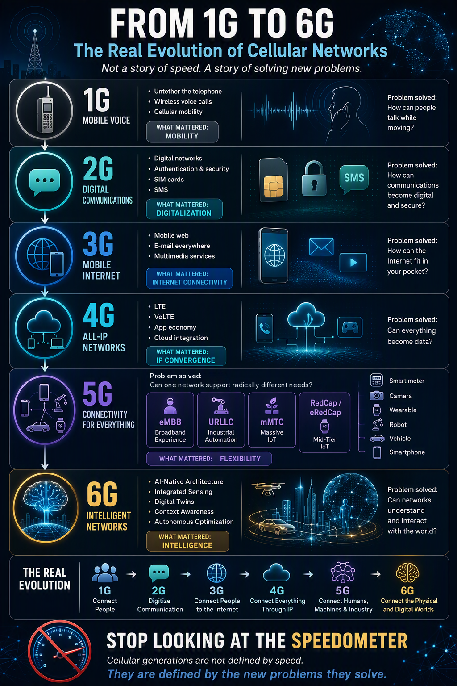

The speedometer problem
You've seen the picture. Five columns: a skateboard, a bike, a car, a plane, a rocket. Under each one, a speedometer: 0.256, 42, 150, 1,000 Mbit/s.
It's tidy, shareable and almost useless. It tells you each generation is faster, which nobody doubted, and hides everything that made it a new generation. I work in the cellular industry, and these charts frustrate me every time. Here's why, and what a better explanation looks like.
Comparing vehicles by roof height
Imagine explaining the difference between a car, an SUV, a truck and a plane with a ruler.
Nothing about a truck carrying cargo. Nothing about a plane needing an airport, a pilot's license and air traffic control. Nothing about why a city dweller picks the small car the chart says "loses."
Roof height is a by-product of design, not the design itself. Peak data rate is the same: the result of choices about radio, architecture, spectrum and services. Those choices are what define a generation.
Even on speed, the chart misleads
- Peak isn't typical. These are theoretical maxima: ideal radio, maximum bandwidth, one user in the cell. Real users get a fraction, shared with everyone nearby.
- One number hides a decade. 2G's 0.256 Mbit/s is EDGE, a late upgrade; GSM launched at 9.6 kbit/s. 3G's 42 Mbit/s is HSPA+, not the 384 kbit/s of early UMTS. 4G went from 150 Mbit/s to multi-gigabit.
- Speed is one requirement among many. The ITU targets behind 4G and 5G also cover latency, spectral efficiency, device density, mobility, energy and reliability. For 5G, a million devices per km² and 1 ms latency matter as much as 20 Gbit/s.
A better lens: the problem each generation solved
Every generation exists to solve a problem its predecessor couldn't. Speed improved along the way, but the problem is what defined the generation. So I drew it that way.

Below, each row of the graphic, with what is underneath it.
Mobile voice
What mattered: mobility
How can people talk while moving?
1G's breakthrough wasn't the handset but the cellular concept: many small cells, frequencies reused across them, and calls handed over as users move. Handover still underpins every network today.
- Analog voice, one frequency channel per call (FDMA), and no encryption: anyone with a scanner could listen in.
- National systems with no roaming: NMT in the Nordics, AMPS in the US, TACS in the UK, Natel C in Switzerland.
- No global standard at all. 1G predates both GSM and 3GPP.
Digital communications
What mattered: digitalization
How can communications become digital and secure?
Turning voice into bits is the biggest single break in this story. Digital voice can be compressed, encrypted, error-corrected and mixed with data. Everything else on the 2G row follows from that.
- TDMA. Each 200 kHz GSM carrier is split into 8 time slots: more users per MHz, better quality, lower cost.
- Security, one way. The network authenticates and encrypts, but the phone never verifies the network. That opened the door to fake base stations, and the A5 ciphers were eventually broken.
- The SIM card. It separated the subscriber from the handset and made international roaming real.
- SMS. A side feature riding on signaling channels became one of the most profitable services the industry ever had.
Underneath sat a digital telephone exchange (MSC, HLR, VLR). Data came later as add-ons, GPRS then EDGE. GSM was specified by ETSI; 3GPP inherited it after 1998.
Mobile internet
What mattered: internet connectivity
How can the Internet fit in your pocket?
3G was the first generation designed for data, and the first standardized by 3GPP, founded in 1998 for exactly that. It brought the mobile web, email everywhere and multimedia, and set the stage for the smartphone.
- WCDMA. All users share one 5 MHz carrier at the same time, separated by codes. Flexible, but power control is critical and cells "breathe" as load changes.
- Two parallel worlds. A circuit core for voice, a packet core for data, and a radio network controller (RNC) steering the base stations.
- Mutual authentication. With AKA, the phone finally verifies the network too.
Its weakness: data was still a guest in a network built for calls. Around 100 ms of latency, a complex architecture, and split voice and data paths became 4G's to-do list.
All-IP networks
What mattered: IP convergence
Can everything become data?
4G said yes. LTE dropped circuit switching entirely, and voice became IP packets like everything else. It's the most underrated shift in the series: the mobile network went from a phone system that carries data to a data network that carries voice.
- OFDMA radio. A scheduler assigns blocks of time and frequency every millisecond. Channels from 1.4 to 20 MHz, MIMO built in, carrier aggregation later.
- A flat core. The EPC replaced the two domains, and RNC functions moved into the base station. Fewer hops, around 30–50 ms of latency.
- VoLTE. Early 4G had no native voice and fell back to 3G or 2G for calls. VoLTE, running on IMS, fixed that.
- The app economy. An always-on IP pipe made streaming, ride-hailing, mobile payments and cloud services possible on a phone.
And from Release 13, 4G started designing for machines. LTE-M and NB-IoT trade speed for deep coverage, low cost and ten-year battery life. The machine era starts here, not with 5G.
Connectivity for everything
What mattered: flexibility
Can one network serve radically different needs?
A phone streaming 4K video, a factory robot, a smart meter in a basement and a smartwatch have almost nothing in common. 5G is built to serve them all on one infrastructure.
- eMBB. The throughput the speed charts love, from wide channels at 3.5 GHz and in millimeter wave.
- URLLC. Millisecond latency with very high reliability, for industrial control.
- mMTC. Up to a million devices per km², carried largely by LTE-M and NB-IoT, now part of the 5G family.
- RedCap and eRedCap. A mid-tier for wearables, cameras and sensors that need more than NB-IoT and far less than a smartphone.
Flexibility runs through every layer: a scalable radio with sub-millisecond slots, massive MIMO and beamforming; a cloud-native core that enables network slicing and edge computing; and an encrypted subscriber identity (SUCI) that defeats most IMSI catchers.
One caveat. Many operators launched non-standalone 5G: 5G radio on top of a 4G core. The phone shows "5G," but slicing and URLLC only arrive with a standalone core.
Intelligent networks
What will matter: intelligence
Can networks understand and interact with the world?
6G isn't here yet. The ITU has framed IMT-2030, 3GPP began its 6G studies in Release 20, and first specifications are expected around 2030. It's a direction rather than a design, and once again, the direction isn't speed.
- AI-native. Designed in from the start, down to the air interface, rather than bolted on.
- Integrated sensing. The same signals that carry data also detect, locate and track objects.
- Digital twins. Live models of factories, cities and transport systems.
- Autonomous operation. A network that understands what each device needs and adapts with far less manual configuration.
Under the hood, at a glance
| 1G | 2G | 3G | 4G | 5G | 6G | |
|---|---|---|---|---|---|---|
| Standard | National systems | GSM (ETSI) | UMTS, 3GPP Rel-99 | LTE, Rel-8 | NR, Rel-15 | IMT-2030, studies from Rel-20 |
| Radio access | FDMA, analog | TDMA | WCDMA | OFDMA | Flexible OFDM, massive MIMO | AI-native air interface explored |
| Switching | Circuit | Circuit, packet add-on | Circuit + packet | All-IP | All-IP | All-IP |
| Core | Exchange | MSC + GPRS | MSC + packet core | EPC, flat | 5GC, cloud-native | To be defined |
| Voice | Analog | Circuit | Circuit | VoLTE | VoNR | IMS-based |
| Security | None | One-way auth | Mutual auth | Layered keys | Concealed identity | To be defined |
| Latency | n/a | Hundreds of ms | ~100 ms | ~30–50 ms | A few ms | Below 5G |
Indicative orders of magnitude; real values depend on release, deployment and load. The 6G column reflects research directions, not final specifications.